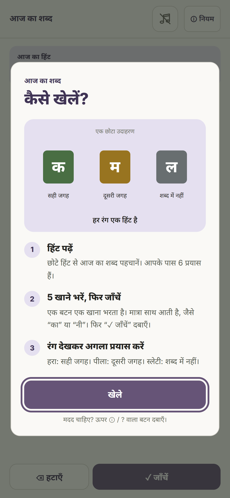
01-aaj-ka-shabd/01-how-to-play.png
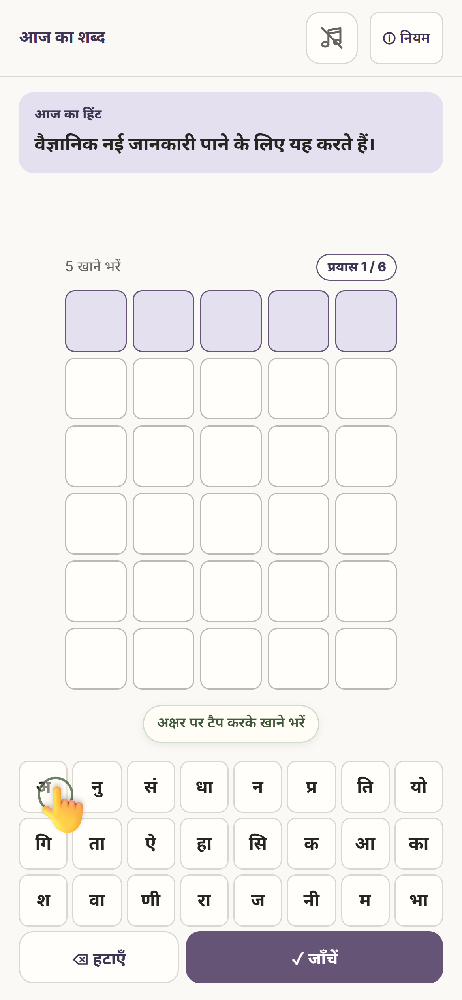
01-aaj-ka-shabd/00-cover.png

01-aaj-ka-shabd/02-colour-hints.png
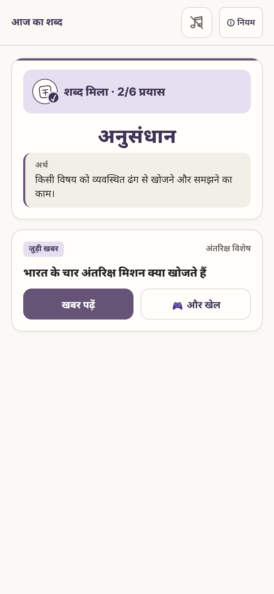
01-aaj-ka-shabd/03-word-and-meaning.png
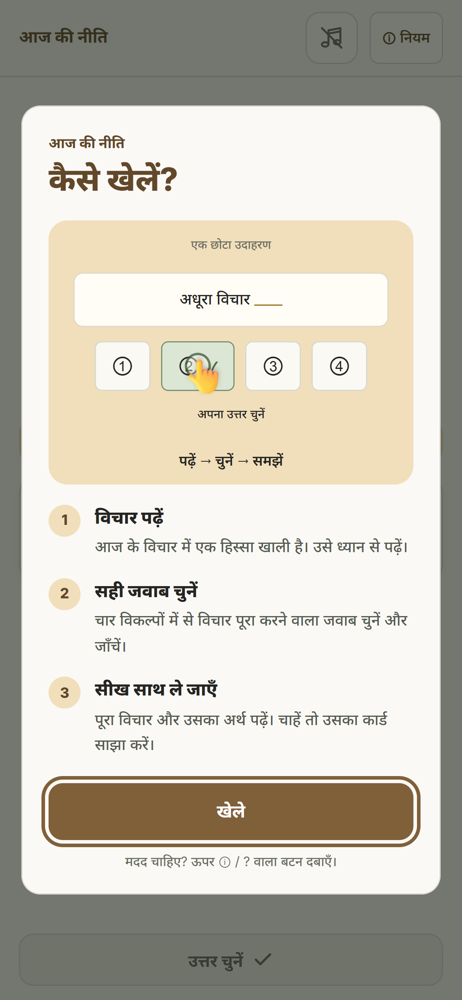
02-aaj-ki-niti/01-how-to-play.png

02-aaj-ki-niti/00-cover.png

02-aaj-ki-niti/02-choose-an-answer.png
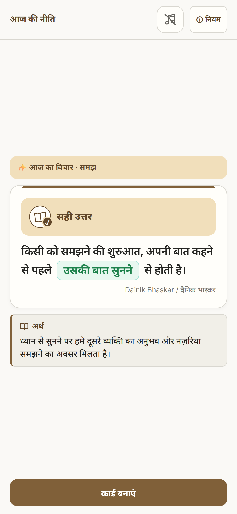
02-aaj-ki-niti/03-thought-and-meaning.png

02-aaj-ki-niti/04-personalised-card.png
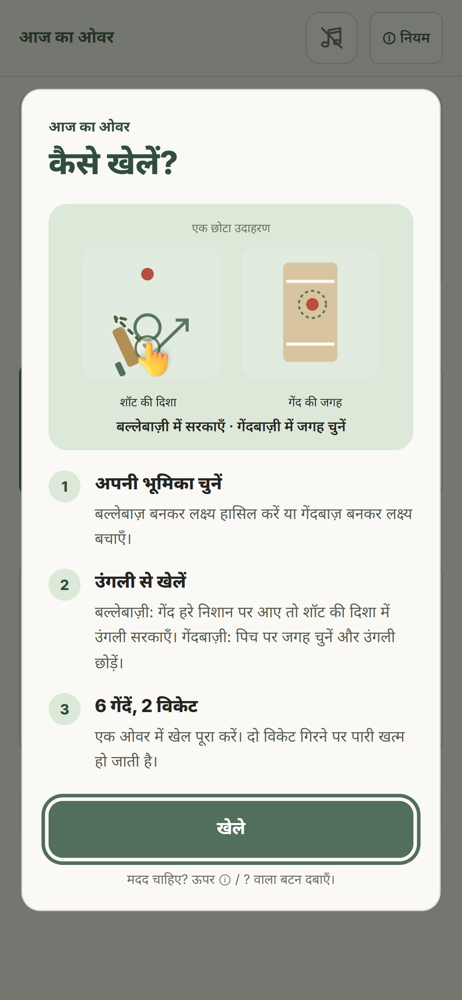
03-aaj-ka-over/01-how-to-play.png
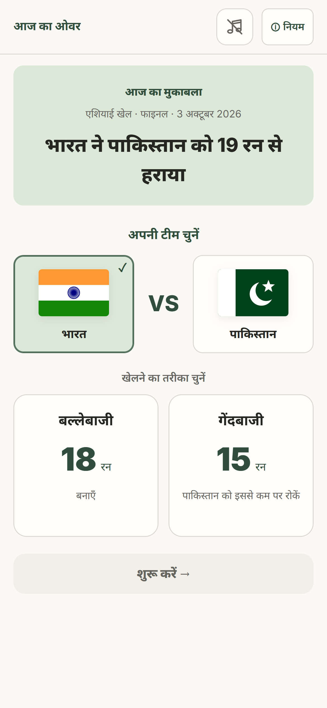
03-aaj-ka-over/00-cover.png
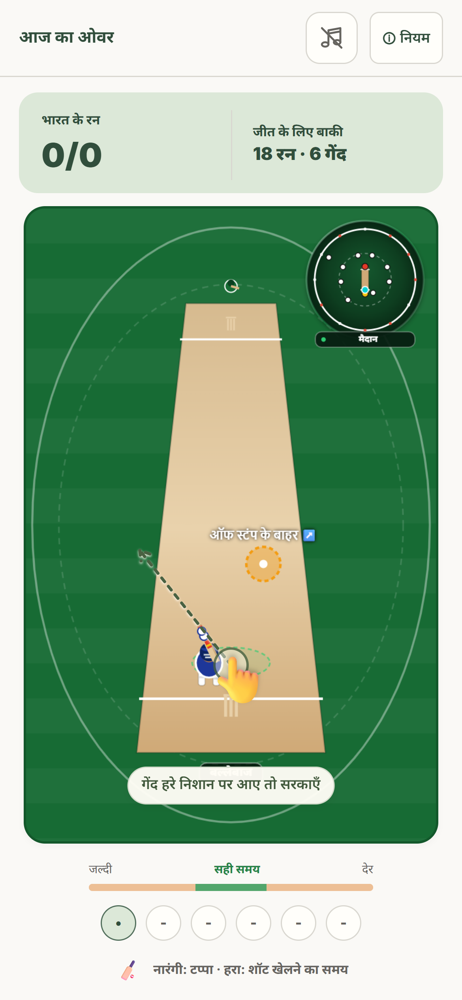
03-aaj-ka-over/02-batting.png

03-aaj-ka-over/03-bowling.png
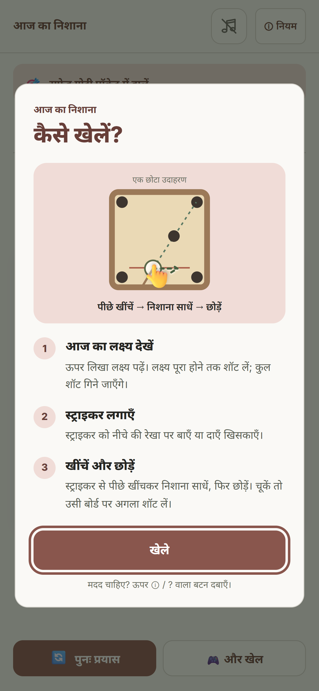
04-aaj-ka-nishana/01-how-to-play.png

04-aaj-ka-nishana/00-cover.png

04-aaj-ka-nishana/02-aim-and-power.png

04-aaj-ka-nishana/03-after-the-shot.png
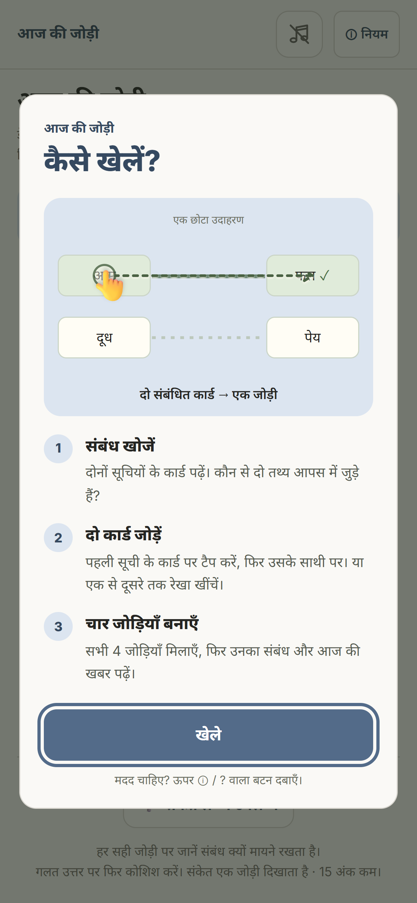
05-aaj-ki-jodi/01-how-to-play.png

05-aaj-ki-jodi/00-cover.png
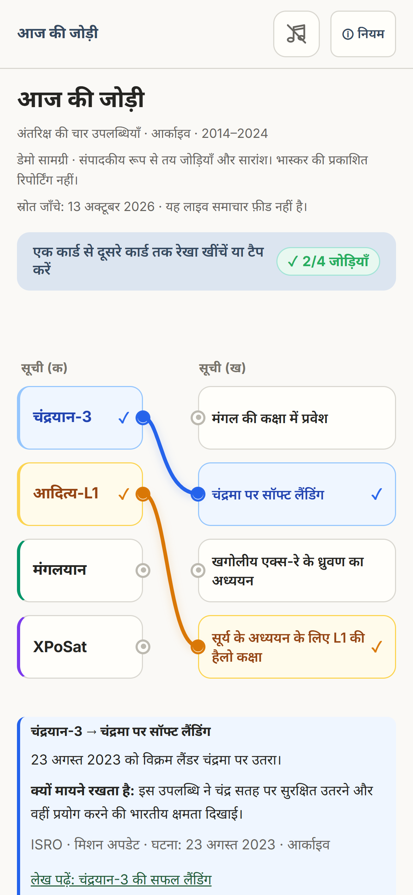
05-aaj-ki-jodi/02-making-connections.png
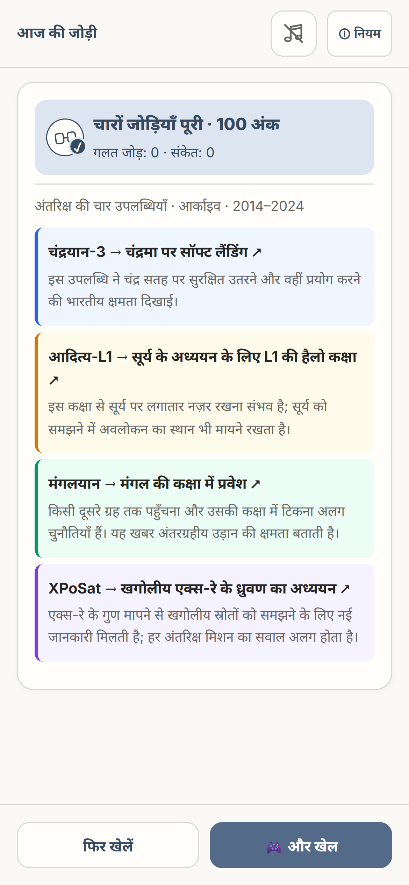
05-aaj-ki-jodi/03-connections-explained.png
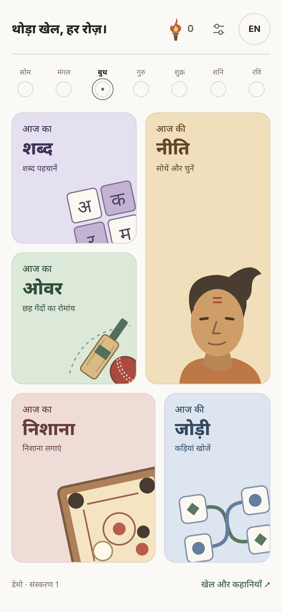
01-collection-home.png